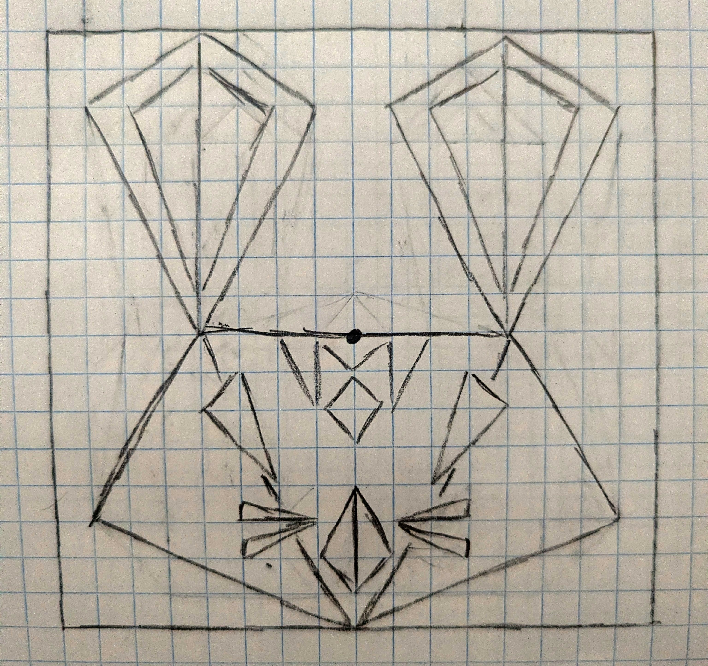

Assignment 1
Please use a browser that supports "canvas"
Clear Canvas
Drawing Mode:
Square
Triangle
Circle
Star
Color
Red
Green
Blue
Shape Size
Circle / Star Segment Count
Draw A Bunny

Marcus Ochoa
mochoa14@ucsc.edu
Notes to grader:
My bonus feature is support for painting stars which also works with the segment count slider. In the bunny image I hid my initials in the forehead.